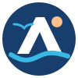
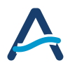
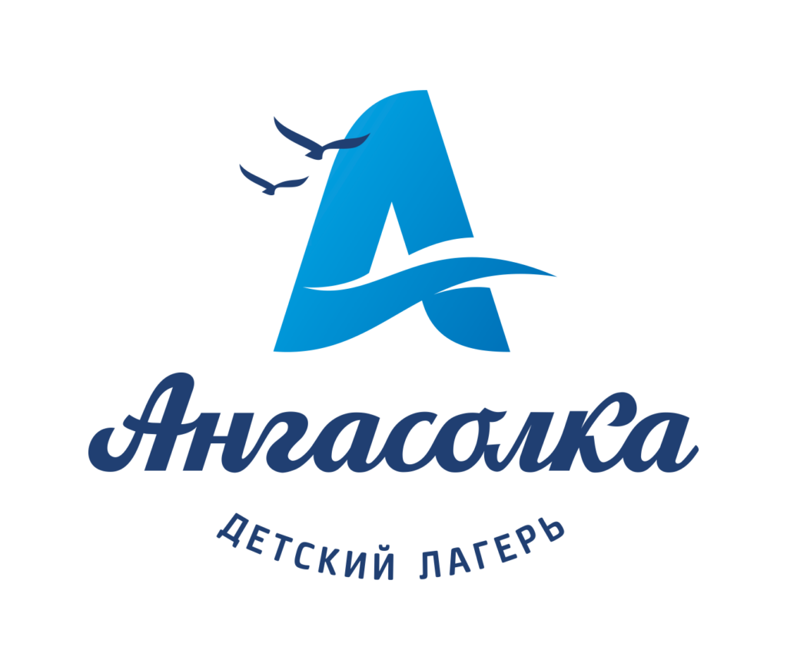

01 / А И ВОЛНА
Связь с историей
ЭскизБлиже всего к существующему логотипу. Волна становится перекладиной буквы, птицы сохраняют ощущение свободы. Компактный знак ставится рядом с полным названием.
16 / 32 / 48 pxСохраняем главное в исходном знаке: букву «А», движение воды и синий цвет. Упрощаем детали, чтобы знак читался в названии, на телефоне и на маленькой иконке.
Ближе всего к существующему логотипу. Волна становится перекладиной буквы, птицы сохраняют ощущение свободы. Компактный знак ставится рядом с полным названием.
16 / 32 / 48 px
Круглая эмблема для аватарок, нашивок и сувениров. Солнце добавляет тепла, а замкнутая форма объединяет элементы в самостоятельный значок.

Только буква и волна. Хорошо читается в маленьком размере, подходит для иконки вкладки, указателей и одноцветной печати после адаптации.

Оригинальный логотип с angasolka.net сохранён в блоке детского лагеря. Новые SVG — предложения для оформления турбазы, а не утверждённый ребрендинг лагеря.